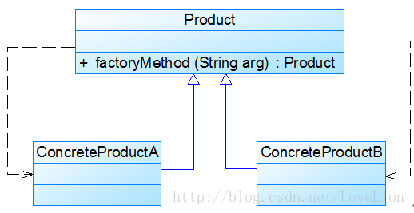

静态/简单工厂模式是工厂模式中最简单的一种实现，但是它实现了工厂模式的精髓，即将对象的创建和使用分离开，客户端通过调用工厂来创建具体的产品类。
1. 问题描述#
class Chart {
private String type; //图表类型
public Chart(Object[][] data, String type) {
this.type = type;
if (type.equalsIgnoreCase("histogram")) {
//初始化柱状图
}
else if (type.equalsIgnoreCase("pie")) {
//初始化饼状图
}
else if (type.equalsIgnoreCase("line")) {
//初始化折线图
}
}
public void display() {
if (this.type.equalsIgnoreCase("histogram")) {
//显示柱状图
}
else if (this.type.equalsIgnoreCase("pie")) {
//显示饼状图
}
else if (this.type.equalsIgnoreCase("line")) {
//显示折线图
}
}
}
问题：
- 冗长
- 职责太重
- Constructor构建会非常耗时
2. 简单工程模式概述#
2.1 定义#
首先将需要创建的各种不同对象（例如各种不同的Chart对象）的相关代码封装到不同的类中，这些类称为具体产品类，而将它们公共的代码进行抽象和提取后封装在一个抽象产品类中，每一个具体产品类都是抽象产品类的子类；然后提供一个工厂类用于创建各种产品，在工厂类中提供一个创建产品的工厂方法，该方法可以根据所传入的参数不同创建不同的具体产品对象；客户端只需调用工厂类的工厂方法并传入相应的参数即可得到一个产品对象。
- 具体产品类
- 抽象产品类
- 工厂类 - 创建产品，工厂方法
- 客户端 调用工厂类的工厂方法得到产品对象
简单工厂模式(Simple Factory Pattern)：定义一个工厂类，它可以根据参数的不同返回不同类的实例，被创建的实例通常都具有共同的父类。因为在简单工厂模式中用于创建实例的方法是静态(static)方法，因此简单工厂模式又被称为静态工厂方法(Static Factory Method)模式，它属于类创建型模式。
2.2 结构#

- Factory
工厂角色即工厂类，它是简单工厂模式的核心，负责实现创建所有产品实例的内部逻辑；工厂类可以被外界直接调用，创建所需的产品对象；在工厂类中提供了静态的工厂方法factoryMethod()，它的返回类型为抽象产品类型Product。
- Product 抽象产品
它是工厂类所创建的所有对象的父类，封装了各种产品对象的公有方法，它的引入将提高系统的灵活性，使得在工厂类中只需定义一个通用的工厂方法，因为所有创建的具体产品对象都是其子类对象。
- ConcreteProduct 具体产品
它是简单工厂模式的创建目标，所有被创建的对象都充当这个角色的某个具体类的实例。每一个具体产品角色都继承了抽象产品角色，需要实现在抽象产品中声明的抽象方法。
3 代码实现#
abstract class Product {
//所有产品类的公共业务方法
public void methodSame() {
//公共方法的实现
}
//声明抽象业务方法
public abstract void methodDiff();
}
class ConcreteProduct extends Product {
//实现业务方法
public void methodDiff() {
//业务方法的实现
}
}
class Factory {
//静态工厂方法
public static Product getProduct(String arg) {
Product product = null;
if (arg.equalsIgnoreCase("A")) {
product = new ConcreteProductA();
//初始化设置product
}
else if (arg.equalsIgnoreCase("B")) {
product = new ConcreteProductB();
//初始化设置product
}
return product;
}
}
//客户端代码，直接调用工厂类的工厂方法来得到产品对象
class Client {
public static void main(String args[]) {
Product product;
product = Factory.getProduct("A"); //通过工厂类创建产品对象
product.methodSame();
product.methodDiff();
}
}
3.1 结构图#

3.2 完整方案#
//抽象图表接口：抽象产品类
interface Chart {
public void display();
}
//柱状图类：具体产品类
class HistogramChart implements Chart {
public HistogramChart() {
System.out.println("创建柱状图！");
}
public void display() {
System.out.println("显示柱状图！");
}
}
//饼状图类：具体产品类
class PieChart implements Chart {
public PieChart() {
System.out.println("创建饼状图！");
}
public void display() {
System.out.println("显示饼状图！");
}
}
//折线图类：具体产品类
class LineChart implements Chart {
public LineChart() {
System.out.println("创建折线图！");
}
public void display() {
System.out.println("显示折线图！");
}
}
//图表工厂类：工厂类
class ChartFactory {
//静态工厂方法
public static Chart getChart(String type) {
Chart chart = null;
if (type.equalsIgnoreCase("histogram")) {
chart = new HistogramChart();
System.out.println("初始化设置柱状图！");
}
else if (type.equalsIgnoreCase("pie")) {
chart = new PieChart();
System.out.println("初始化设置饼状图！");
}
else if (type.equalsIgnoreCase("line")) {
chart = new LineChart();
System.out.println("初始化设置折线图！");
}
return chart;
}
}
3.3 改进#
将选择具体的chart类的代码封装到xml文件里，然后写一个相应的方法去读取XML参数。
<?xml version="1.0"?>
<config>
<chartType>histogram</chartType>
</config>
写一个工具类，来获取XML文件里的参数
import javax.xml.parsers.*;
import org.w3c.dom.*;
import org.xml.sax.SAXException;
import java.io.*;
public class XMLUtil {
//该方法用于从XML配置文件中提取图表类型，并返回类型名
public static String getChartType() {
try {
//创建文档对象
DocumentBuilderFactory dFactory = DocumentBuilderFactory.newInstance();
DocumentBuilder builder = dFactory.newDocumentBuilder();
Document doc;
doc = builder.parse(new File("config.xml"));
//获取包含图表类型的文本节点
NodeList nl = doc.getElementsByTagName("chartType");
Node classNode = nl.item(0).getFirstChild();
String chartType = classNode.getNodeValue().trim();
return chartType;
}
catch(Exception e) {
e.printStackTrace();
return null;
}
}
}
4.总结#

4.1 优势#
- 将对象的创建和使用分离
- 客户端不再直接创建产品对象，仅仅消费产品
- 配置文件，提高系统灵活性
4.2 缺陷#
- 工厂类集中了所有的创建逻辑，职责太重。一旦不能正常工作，整个系统都要受影响。
- 势必增加类的个数，引入新的工厂类，增加了系统的复杂度和理解程度
- 系统扩展困难！！！一旦添加新产品就必须修改工厂逻辑
- 使用了静态工厂方法，造成工厂角色无法形成基于继承的等级结构